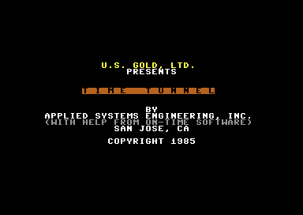
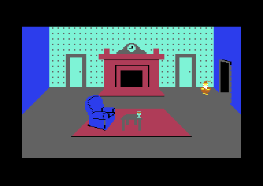
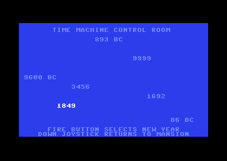

<meta charset="utf-8">
<meta name="viewport" content="width=device-width, initial-scale=1">
<title>Time Tunnel</title>
<link rel="preconnect" href="https://fonts.googleapis.com">
<link rel="stylesheet" href="https://fonts.googleapis.com/css2?family=Lato:wght@400;700;900&family=IBM+Plex+Mono:wght@400;500&display=swap">
<style>
:root{
  --bg:#23262d; --paper:#e9e7e1; --surface:#ffffff; --surface-2:#f1efea; --line:#d5d3cc; --line-soft:#e0ded8;
  --ink:#2f3136; --ink-soft:#55585f; --ink-mute:#80838a;
  --link:#1f5fa8; --link-hover:#154480; --accent:#1f5fa8;
  --amber:#c25a00; --cyan:#1f5fa8; --coral:#d04a3a; --green:#2a8a4a; --violet:#4a5bd6; --hl:#fff0c2;
  --chip:#2f3136; --chip-ink:#ffffff;
  --c64blue:#40318d; --c64grey:#686868;
  --fd:'Lato',system-ui,sans-serif; --fb:'Lato',system-ui,sans-serif; --fm:'IBM Plex Mono',ui-monospace,Menlo,monospace;
  --col:1080px; --gx:68px; --fs:17px; --lh:1.6; --hw:900; --h1:46px; --h2:26px; --sy:48px; --pp:26px; --r:10px;
  --plate-shadow:0 1px 2px rgba(0,0,0,.05),0 4px 14px rgba(0,0,0,.05);
}
*{box-sizing:border-box}
html{background:var(--bg);min-height:100%}
body{background:var(--paper);color:var(--ink);font-family:var(--fb);font-size:var(--fs);line-height:var(--lh);max-width:var(--col);margin:0 auto;min-height:100vh;padding:0 0 4rem}
h1,h2,h3{font-weight:var(--hw);letter-spacing:-.01em;text-wrap:balance;color:var(--ink);margin:0}
.wrap{padding:0 var(--gx)}
.hero{padding:48px var(--gx) 8px;text-align:left}
.eyebrow{font-family:var(--fm);font-size:12px;letter-spacing:.08em;text-transform:uppercase;color:var(--ink-mute);margin:0 0 10px}
.hero h1{font-size:var(--h1);line-height:1.15;letter-spacing:-.02em;margin:0 0 14px}
.hero .sub{margin:0 0 .6em;color:var(--ink-soft)}
section{padding:var(--sy) 0 24px}
section:last-of-type{border-bottom:none}
.fig{font-family:var(--fm);font-size:12px;letter-spacing:.08em;text-transform:uppercase;color:var(--ink-mute);margin:0 0 10px}
h2.t{font-size:var(--h2);margin-bottom:12px}
.lede{color:var(--ink-soft);margin:0 0 30px}
.plate{background:var(--surface);border:1px solid var(--line);border-radius:var(--r);padding:var(--pp);box-shadow:var(--plate-shadow)}
.cap{font-size:14px;color:var(--ink-mute);margin-top:14px;line-height:1.55}
.cap b{color:var(--ink);font-weight:700}
code{font-family:var(--fm);font-size:.82em;background:var(--chip);color:var(--chip-ink);border-radius:4px;padding:2px 6px;overflow-wrap:break-word;-webkit-box-decoration-break:clone;box-decoration-break:clone}

.tt-shots{display:grid;grid-template-columns:repeat(auto-fit,minmax(240px,1fr));gap:12px}
.tt-shots figure{margin:0}
.tt-shots img,.tt-shots canvas{display:block;width:100%;height:auto;image-rendering:pixelated;border-radius:4px;background:#000}
.tt-shots figcaption{font-size:13px;color:var(--ink-mute);margin-top:6px}
.tt-cv{display:block;width:100%;height:auto;image-rendering:pixelated;background:#000;border-radius:4px}
.tt-bar{display:flex;gap:8px;flex-wrap:wrap;align-items:center;margin:0 0 14px}
.tt-bar button{font-family:var(--fm);font-size:13px;background:var(--surface-2);border:1px solid var(--line);border-radius:6px;padding:6px 11px;cursor:pointer;color:var(--ink)}
.tt-bar button[aria-pressed="true"]{background:var(--chip);color:var(--chip-ink);border-color:var(--chip)}
.tt-tab{border-collapse:collapse;width:100%;font-size:14px;margin-top:14px}
.tt-tab th,.tt-tab td{border-bottom:1px solid var(--line-soft);padding:6px 8px;text-align:left;vertical-align:top}
.tt-tab th{font-family:var(--fm);font-size:12px;letter-spacing:.06em;text-transform:uppercase;color:var(--ink-mute);font-weight:500}
.tt-tab td.n{font-family:var(--fm);text-align:right}
.tt-wrapx{overflow-x:auto}
.tt-objview{display:flex;gap:18px;flex-wrap:wrap;align-items:flex-start}
.tt-objview canvas{flex:none;width:288px;max-width:100%;height:auto;image-rendering:pixelated;background:#1a1a1a;border-radius:4px}
.tt-objview table{flex:1;min-width:220px;margin-top:0}
</style>
<!-- tabs -->
<header class="hero">
  <p class="eyebrow">1985 · U.S. Gold</p>
  <h1>Time Tunnel</h1>
  <p class="sub">A gnome with a broken time machine visits seven eras for the seven pieces of a scripture. The game draws each of its 53 rooms from a packed screen of about 400 bytes, runs every puzzle as a short routine of its own, and plays eight tunes on two voices.</p>
</header>
<main class="wrap">

<section id="game">
  <p class="fig">01 · The game</p>
  <h2 class="t">A gnome who wants to be king</h2>
  <p class="lede">The gnome wants to be King of the Gnomes. The scripture that says how is in seven pieces, one in each of seven eras.</p>
  <div class="plate tt-shots">
    <figure><figcaption>The credits print themselves a letter at a time, then the game starts by itself.</figcaption></figure>
    <figure><figcaption>Play starts in the living room of Gnome Mansion, in the present day.</figcaption></figure>
  </div>
  <p>The time machine stands in the mansion, missing a part. Lighting a fire in the living room brings the part out onto the table, and with it in place the machine goes to any of seven years: the Stone Age, Magical Persia, Mythological Greece, Colonial Salem, the California gold rush, an intergalactic spaceship, and the Black Hole.</p>
  <p>Each era is a handful of rooms with one puzzle in it, solved by bringing the right objects, some of them from another era. The gnome carries one thing at a time, and the button does everything: it picks things up, puts them down, opens doors and fires a lightning bolt. When all seven pieces lie in the Black Hole they show a message, and the message says how the game ends.</p>
</section>

<section id="music">
  <p class="fig">02 · Music</p>
  <h2 class="t">Music: each era's tune keeps its own speed</h2>
  <p class="lede">Each era has a tune, and the mansion, the Black Hole and the throne room share one. The flute in Persia has two more.</p>
  <div class="plate"><div id="tt-sid"></div>
  <p class="cap">The game's own music code, taken from its listing (the program as the Source code tab shows it, here addresses <code>$BB11</code>-<code>$C5A7</code>) and run on the site's 6502, a copy of the C64's processor written for this page. It runs once a frame, a fiftieth of a second, as the game's raster interrupt runs it: a call the video chip makes at the same point of every picture it draws. A button starts its tune as the game does, with <code>tune_start</code> and the era's tempo. <code>test_music.js</code> runs the game's own starts (<code>era_enter</code>'s and the flute's) on the kit's simulator and checks that both write the same values to the sound chip, frame by frame, for 3,000 frames a tune.</p></div>
  <p>The C64's sound chip, the SID, has three voices, and each plays one note at a time. The music uses the second and third, both with a triangle wave, a soft tone like a flute's, and leaves the first to the sound effects. A tune is a list of pairs for each voice, a note and a length (<code>tune_table</code>, <code>$BCCE</code>; a <code>$</code> marks a number in hexadecimal, base 16, the usual way to write memory addresses). Every note starts at volume 7 of 15 (the chip's sustain level) and drops a level on every fourth step until the next note (<code>music_play</code>, <code>$BCEE</code>), so each note dies away. A voice skips its first pair when the tune starts and plays it when the tune comes round again: in most tunes that pair is a rest, so the pause falls between repeats.</p>
  <p>The speed comes from the era. <code>music_play</code> runs every frame, but the tune moves on a step only on some frames. The game counts frames, and the era's record holds a mask: a number whose binary digits pick which counts let the tune step. The mask 1 lets it step on every other frame, 3 on three in four, 7 on seven in eight, and the spaceship's <code>$FF</code> on all but one frame in 256.</p>
  <table class="tt-tab">
    <tr><th>Tune</th><th>Where it plays</th><th>Tempo mask</th><th>Steps a second</th></tr>
    <tr><td class="n">0</td><td>Colonial Salem</td><td class="n">3</td><td class="n">37.5</td></tr>
    <tr><td class="n">1</td><td>The California gold rush</td><td class="n">1</td><td class="n">25</td></tr>
    <tr><td class="n">2</td><td>Magical Persia, and the flute put down</td><td class="n">1</td><td class="n">25</td></tr>
    <tr><td class="n">3</td><td>Gnome Mansion, the Black Hole and the throne room</td><td class="n">7</td><td class="n">43.75</td></tr>
    <tr><td class="n">4</td><td>The intergalactic spaceship</td><td class="n">$FF</td><td class="n">49.8</td></tr>
    <tr><td class="n">5</td><td>The Stone Age</td><td class="n">1</td><td class="n">25</td></tr>
    <tr><td class="n">6</td><td>The flute played in Persia</td><td class="n">1</td><td class="n">25</td></tr>
    <tr><td class="n">7</td><td>Mythological Greece</td><td class="n">1</td><td class="n">25</td></tr>
  </table>
</section>

<section id="effects">
  <p class="fig">03 · Sound effects</p>
  <h2 class="t">Sound: a second effect is dropped while one plays</h2>
  <p class="lede">The effects play on the sound chip's first voice, one at a time.</p>
  <div class="plate"><div id="tt-sfx"></div>
  <p class="cap">The same sound code as the music, from the listing, on the site's copy of the C64's processor. A button calls <code>sfx_start</code> (<code>$BB32</code>) as the game does, then <code>sfx_play</code> (<code>$BB51</code>) once a frame, as the main loop does. Effects 2, 3, 4 and 6 repeat until the game stops them, so here they play until their button is pressed again. <code>test_music.js</code> checks these against the game's own code as it does the tunes.</p></div>
  <p>An effect is a script of one-byte commands (<code>sfx_script</code>, <code>$BC6E</code>): set a pitch, set a waveform, fade, wait, slide up or down, loop, and warble. The code keeps track of one effect at a time, so <code>sfx_start</code> ignores a new effect while another plays. Seventeen places in the game start an effect.</p>
  <table class="tt-tab">
    <tr><th>Effect</th><th>Started by</th></tr>
    <tr><td class="n">0</td><td>the closet (a store room he can reach from any era) refusing to let him go, the trip into the closet, Medusa beaten</td></tr>
    <tr><td class="n">1</td><td>the living room's fire lighting, Medusa's shot, Salem's brew and the broom it makes</td></tr>
    <tr><td class="n">2</td><td>the oxygen tank's valve appearing, in the gold rush (<code>gold_tank</code>)</td></tr>
    <tr><td class="n">3</td><td>a trip in time (<code>time_travel</code>)</td></tr>
    <tr><td class="n">4</td><td>the time machine's button, the spaceship's teleport</td></tr>
    <tr><td class="n">5</td><td>arriving in an era, the machine's countdown over, the bolt that hits Persia's lamp, the dynamite going off, arriving on the moon</td></tr>
    <tr><td class="n">6</td><td>the Black Hole's message</td></tr>
  </table>
</section>

<section id="frame">
  <p class="fig">04 · The screen</p>
  <h2 class="t">One frame of play, rebuilt</h2>
  <p class="lede">The living room, drawn on this page from the memory and the video chip's registers (the settings it draws the screen by) that the emulator recorded over one frame of play.</p>
  <div class="plate"><canvas id="tt-frame" class="tt-cv" width="384" height="272" aria-label="The living room with the gnome, rebuilt from memory"></canvas>
  <p class="cap">All 104,448 pixels match the emulator's picture of the same frame. The game changes no video register while the frame is drawn, so one set of registers draws the whole screen.</p></div>
  <p>The screen is a grid of cells, 40 across, and each cell shows a character: a small picture, 8 by 8 pixels, from a character set of up to 256 of them. The game draws its rooms with characters in multicolour mode, where each character is four double-width pixels across, in three colours shared by the whole screen and one of the cell's own. The game keeps one character set for each era, packed (squeezed into fewer bytes; a byte is one number from 0 to 255), and unpacks it into memory at <code>$F000</code> on arrival (<code>era_load_charset</code>, <code>$3456</code>). The gold rush and Salem have two sets each, one for the street and one for the caves or houses. The screen sits in 24-row mode, so the 25th row is hidden under the border.</p>
</section>

<section id="rooms">
  <p class="fig">05 · Rooms</p>
  <h2 class="t">A room in about 400 bytes</h2>
  <p class="lede">Every room is one packed screen. The 44 screens take 17,911 bytes, where the plain screens would take 42,460.</p>
  <div class="plate">
    <div class="tt-bar"><button type="button" id="tt-bit7" aria-pressed="false">Mark the cells in the second colour</button></div>
    <canvas id="tt-room" class="tt-cv" width="384" height="272" aria-label="The living room as the game draws it"></canvas>
    <p class="cap" id="tt-room-cap">The living room as the game draws it on the page: the game's own code unpacks the era's characters and the room's screen, from the listing, on the site's copy of the C64's processor. <a href="levels.html">The Maps tab</a> draws all 53 rooms the same way.</p>
  </div>
  <p>A packed screen starts with five bytes: the three colours the whole screen shares, and two colours for the cells. The rest is the 960 cells of 24 rows, packed (<code>room_draw</code>, <code>$39A1</code>). The packing (<code>unpack</code>, <code>$3B2C</code>) works in groups of eight cells. A byte is eight bits, each 0 or 1, and the first byte of a group is a flag byte: each of its bits, from the top, says whether the next cell repeats the last value or takes a new byte from the data. So a run of the same character costs one bit a cell. A new byte equal to the last one ends the screen.</p>
  <p>Each cell's byte holds a character number, 0 to 127, in its lower seven bits. The top bit picks which of the two cell colours from the header the cell gets. The button above marks those cells. The living room's header is <code>00 0B 02 06 03</code>: black, dark grey and red for the whole screen, and blue or cyan for the cells. The same packing holds the character sets.</p>
  <p>Two rooms are empty. A header with its top bit set means no screen at all (<code>empty_screen</code>, <code>$41A5</code>), and <code>room_draw</code> fills the screen with character 0 on black. The Black Hole's first room is one, so it is black but for its sprites, the moving pictures the video chip draws over the screen.</p>
</section>

<section id="eras">
  <p class="fig">06 · Eras</p>
  <h2 class="t">Every era is one record in a table</h2>
  <p class="lede">The time machine has seven years on its dial. The game has nine eras: those seven, the mansion, and the throne room where the game ends.</p>
  <div class="plate"><div class="tt-wrapx"><table class="tt-tab" id="tt-eras"></table></div>
  <p class="cap">Read from the listing: each era's record (<code>era1_record</code> ... <code>era9_record</code>), found through <code>era_offsets</code> (<code>$0BA8</code>). The columns name the record's bytes 0-1, 2-3, 4-5, 6, 7 and 8-9; the rooms' packed screens follow from byte 10, one address a room.</p></div>
  <p>The era is one number, kept at <code>$2A</code>, and the room another, at <code>$19</code>. Each era's record names a routine (a piece of the program that others call) that runs every frame of play in that era, another that runs as the gnome walks into one of its rooms, the era's character set, its tune and tempo, where the gnome arrives, and the address of each room's screen. Both routines go straight to the code for the current room through a table of addresses (<code>switch_room</code>, <code>$387D</code>). So the whole game is one main loop that calls the era's routine, and each puzzle is a few dozen instructions in one room's entry of that table.</p>
  <div class="plate tt-shots"><figure><figcaption>The time machine's controls, in the character ROM's letters. Each press of the button lights the next year.</figcaption></figure></div>
  <p>The controls are the mansion's fourth room. Each press of the button lights the next year, and the stick pulled down leaves (<code>controls_pass</code>, <code>$11C1</code>). When the machine runs, the lit year's number, 0 to 6, plus 2 is the era it goes to (<code>machine_countdown_over</code>, <code>$10E4</code>). The game's description in the LaunchBox database says the year is chosen with the joystick and RETURN goes back to the mansion. The screen itself gives the right instructions: FIRE BUTTON SELECTS NEW YEAR, DOWN JOYSTICK RETURNS TO MANSION.</p>
</section>

<section id="objects">
  <p class="fig">07 · Objects</p>
  <h2 class="t">Seven sprites for the objects in a room</h2>
  <p class="lede">Everything the gnome can see or carry is an object: the scorpion, the cage, the broom, the king on his throne. Each has a place in time and a picture.</p>
  <div class="plate">
    <div class="pick"><button type="button" class="step" data-d="-1" aria-label="The object before">‹</button><select id="tt-obj" aria-label="Object"></select><button type="button" class="step" data-d="1" aria-label="The object after">›</button></div>
    <div class="tt-objview"><canvas id="tt-objcv" width="288" height="252" aria-label="The object's frames"></canvas><table class="tt-tab" id="tt-objtab"></table></div>
    <p class="cap">Each frame drawn by the game's own <code>sprite_draw</code> (<code>$A185</code>) into the memory a sprite's picture is read from, from the listing, on the site's copy of the C64's processor, after the start-up has built the mirrored frames (<code>sprites_build</code>). Where the object starts comes from <code>obj_start_table</code> (<code>$0909</code>).</p>
  </div>
  <p>Objects 4 to <code>$6C</code> live in the world. For each one the game keeps five bytes in five tables: its era (<code>$069C</code>), its room (<code>$0705</code>, <code>$FF</code> for nowhere and 0 for carried), its x and y (<code>$076E</code>, <code>$07D7</code>), and the sprite it has on screen (<code>obj_slot</code>, <code>$0840</code>). On entering a room, <code>room_enter</code> (<code>$3A47</code>) gives a sprite to every object whose era and room are the current ones. Objects 0 to 3 are the gnome walking up, down, and to either side.</p>
  <p>A sprite is a picture the video chip draws over the screen by itself, and it has eight. The gnome always has sprite 0, so <code>sprite_alloc</code> (<code>$A0FE</code>) hands out the other seven, from 7 down, and a room can show seven objects at most, the one the gnome carries among them.</p>
  <p>A sprite's picture is 24 pixels wide and 21 high, three bytes to a row. A frame of an object is copied into it in rows of one, two or three bytes, so a narrow object's frames take less memory. The object's flags give its colour, the width of its rows, whether the sprite is stretched to double width, and whether it is multicolour. A second table gives how many frames it has and how many frames of play each one lasts, and whether the gnome can pick it up.</p>
</section>

<section id="controls">
  <p class="fig">08 · Controls</p>
  <h2 class="t">One button does everything</h2>
  <p class="lede">The game reads both joystick ports at once and one key, F7, for pause.</p>
  <div class="plate"><table class="tt-tab">
    <tr><th>The button, pressed</th><th>What happens</th></tr>
    <tr><td>at a mansion door</td><td>the door opens (<code>door_check</code>, <code>door_use</code>)</td></tr>
    <tr><td>at the time machine</td><td>the machine runs, and travels if it is mended (<code>machine_button</code>)</td></tr>
    <tr><td>carrying something</td><td>he puts it down (<code>object_drop</code>)</td></tr>
    <tr><td>touching something he can carry</td><td>he picks it up</td></tr>
    <tr><td>none of these, facing left or right</td><td>he fires a bolt of lightning (object <code>$11</code>)</td></tr>
    <tr><td>held for 128 frames, 2.56 seconds</td><td>he goes to the closet, and back again after 60 frames held there</td></tr>
  </table>
  <p class="cap">From <code>play_button</code> (<code>$361D</code>), <code>play_state</code> (<code>$34B0</code>) and <code>closet_pass</code> (<code>$116A</code>). The main loop combines the two joystick ports (<code>$DC01</code> and <code>$DC00</code>) into one reading, a bit-by-bit AND, so a joystick in either port works.</p></div>
  <p>A few things cannot be picked up at certain times: the oxygen tank once it stands on its pad in the gold rush with its valve, the log while it burns, the cauldron while it sits in Salem's fireplace, and the cage once it has trapped the scorpion. The gnome walks a step on every other frame, so the joystick moves him 25 steps a second.</p>
  <p>F7 pauses and resumes. Pausing silences the sound chip, and the main loop then does nothing but count its two clocks (<code>keys_read</code>, <code>$38FF</code>). The clocks are a count of frames from 0 to 63 (<code>$23</code>) and, under it, a count from 0 to 59 that steps each time the first wraps (<code>$BD</code>), once every 1.28 seconds. The game's slow timers, such as the moon's air and the dynamite's fuse, are in counts of the second.</p>
</section>

<section id="closet">
  <p class="fig">09 · The closet</p>
  <h2 class="t">A closet outside time</h2>
  <p class="lede">Holding the button takes the gnome to a closet, from any era, with whatever he carries. Holding it again takes him back.</p>
  <p>The closet is room 9 of the gold rush era, a room no door leads to. <code>play_state</code> keeps the era, room and position he left in <code>$B0</code>-<code>$B3</code>, and the closet's own code (<code>closet_pass</code>) puts him back there. So the closet is a store for objects that are needed in other eras, and the torch starts there.</p>
  <p>The closet keeps him in when it is too full. Before he leaves, <code>closet_pass</code> counts the objects lying in it. Five or more, and he stays, with a sound. A piece of the scripture puts the count at five by itself, so he cannot leave while a piece lies there. The game's description in the LaunchBox database says the closet holds eight objects; the code lets him leave with four at most. <a href="discoveries.html#closet">Discoveries</a> has the details.</p>
</section>

<section id="end">
  <p class="fig">10 · The end</p>
  <h2 class="t">The message in the Black Hole</h2>
  <p class="lede">The seven pieces drift in the Black Hole until all seven are there. Then they line up and show a message.</p>
  <div class="plate tt-shots">
    <figure><canvas id="tt-msg" class="tt-cv" width="384" height="272" aria-label="The Black Hole's second room: the message in mirror writing"></canvas><figcaption>The Black Hole's second room, as the game's own code draws it: the message, in mirror writing.</figcaption></figure>
    <figure><canvas id="tt-throne" class="tt-cv" width="384" height="272" aria-label="The throne room: the king on his throne and GRATULARI"></canvas><figcaption>The throne room, era 9, where the game ends, with the staff in the king's hand.</figcaption></figure>
  </div>
  <p>The Black Hole's first room is black. Every eighth frame <code>hole_pass</code> (<code>$184E</code>) looks for the seven pieces of the scripture, objects 4 to 10. While any is missing, each piece that is there drifts a random step. When all seven are there, each moves a step at a time to its own place, and three counts (3.84 seconds) after they are all in place the gnome is taken to the second room.</p>
  <p>The second room is the message, drawn in the era's own characters and in mirror writing: "The Daimyo Carries The Staff". It stays 6 counts of the clock (7.7 seconds) the first time, and a count longer each time after, up to 15 (<code>hole_room_entry</code>, <code>$181C</code>). Once it has been read, the snake in Persia's basket rises for good when the flute is played, and the risen snake, picked up, turns into the staff (<code>snake_to_staff</code>, <code>$1CF3</code>). Carrying the staff into the last room of Persia's cave ends the game in the throne room (<code>persia_cave</code>, <code>$1E9E</code>), with "GRATULARI!!!!!" across the screen and the staff in the king's hand.</p>
  <p>There are no lives. The scorpion, the stalactites, the bats, the snake, Medusa's shot and the pit in Persia's cave send the gnome home to the mansion, and running out of air on the moon puts him back in the spaceship (<code>gnome_hurt</code>, <code>$3378</code>). The game lasts until it is solved.</p>
</section>

<section id="broom">
  <p class="fig">11 · The broom</p>
  <h2 class="t">Salem's flying broom</h2>
  <p class="lede">The broom made in Salem's cauldron flies, with its own small physics.</p>
  <p>The flying broom is three objects, the left end, the middle and the right end, kept 12 steps apart (<code>salem_broom</code>, <code>$3111</code>). The gnome picks up the middle to ride it, and from then the stick steers the broom, not him. Its height rests at <code>$61</code>. Up starts a hop and down a dip. The speed starts at one line a step, and each step it loses a pull of 2/256 of a line, so a hop rises, slows and comes back down to rest (<code>broom_height</code>, <code>$320F</code>). The broom steps on three frames in four. A dip works the same way upside down. Pushing the other way, down during a hop or up during a dip, switches to a stronger pull: 5/256 for a hop and 4/256 for a dip (<code>broom_pull</code>, <code>$3287</code>).</p>
  <p>With the stick at rest the broom wanders by itself, up and left until it nears the left edge, then down and right (<code>broom_wander</code>, <code>$30CA</code>). Ridden off the right edge of the third street room, it flies to the hillside, where the last puzzle of Salem waits under two rocks.</p>
</section>

</main>
<footer style="margin:16px 0 0;padding:22px var(--gx) 0;border-top:1px solid #e0ded8;font-family:'IBM Plex Mono',ui-monospace,Menlo,monospace;font-size:12px;color:#80838a"><a href="https://github.com/gamesexplained/gamesexplained" style="color:#1f5fa8;text-decoration:none">GitHub</a> · <a href="https://discord.gg/3V9GWyRDWV" style="color:#1f5fa8;text-decoration:none">Discord</a><br>© Games Explained contributors. Write-ups, facts and symbol maps are available under <a href="https://creativecommons.org/licenses/by-sa/4.0/" style="color:#1f5fa8;text-decoration:none">CC BY-SA 4.0</a>; code under <a href="https://opensource.org/licenses/MIT" style="color:#1f5fa8;text-decoration:none">MIT</a></footer>
<script src="../../lib/c64.js"></script>
<script src="../../lib/cpu6502.js"></script>
<script src="../../lib/sid.js"></script>
<script>
/* tt-music */
// createDriver for C64Sid: runs the game's own sound code, taken from the listing over
// TT_DRIVER_RANGES, on the kit's 6502 (C64Cpu, from ../../lib/cpu6502.js, which sid.js passes to
// createDriver). Zero page starts at 0 but for the pause flag $AF, $FF (running) as the start-up's
// dec at $0E91 leaves it. A tune's button starts it as the game does: tune_start ($BCAA) with
// X = the tune's number times 4, then its tempo mask in $A0 (era_enter takes both from the era's
// record, $38B2; play_state sets mask 1 for the flute's tunes, $3513 and $353A). Then music_play
// ($BCEE) once a frame, as the raster interrupt calls it. A tune repeats for ever. An effect's
// button calls sfx_start ($BB32) with X = the effect, as the game's seventeen callers do, then
// sfx_play ($BB51) once a frame, as main_loop calls it once a pass. An effect is over when its
// script position ($7A) is back to 0; effects 2, 3, 4 and 6 loop until something stops them, so
// those four play until their button is pressed again. The code reads no chip, and its writes are all to
// the sound chip.
const TT_DRIVER_RANGES = [[0xBB11, 0xC5A7]];
const TT_TUNES = [
  { name: 'The mansion, the black hole and the throne (3)', tune: 3, mask: 7 },
  { name: 'The gold rush (1)', tune: 1, mask: 1 },
  { name: 'Persia (2)', tune: 2, mask: 1 },
  { name: 'The flute played (6)', tune: 6, mask: 1 },
  { name: 'The stone age (5)', tune: 5, mask: 1 },
  { name: 'Greece (7)', tune: 7, mask: 1 },
  { name: 'The spaceship (4)', tune: 4, mask: 0xFF },
  { name: 'Colonial Salem (0)', tune: 0, mask: 3 },
];
const TT_EFFECTS = [
  { name: 'The closet; Medusa beaten (0)', sfx: 0 },
  { name: 'A fire lights; Medusa\'s shot (1)', sfx: 1 },
  { name: 'The oxygen tank\'s valve (2)', sfx: 2 },
  { name: 'A trip in time (3)', sfx: 3 },
  { name: 'The machine; the teleport (4)', sfx: 4 },
  { name: 'Arriving; the dynamite (5)', sfx: 5 },
  { name: 'The black hole\'s message (6)', sfx: 6 },
];
function createDriver(D, C64Cpu) {
  const base = new Uint8Array(0x10000);
  for (const [ad, bytes] of D.mem) base.set(bytes, ad);
  base[0xAF] = 0xFF;
  const sid = new Uint8Array(25);
  let m, cpu, c, writes = [], over = false;
  const io = {
    read(ad) { throw new Error('read $' + ad.toString(16)); },
    write(ad, val) {
      if (ad >= 0xD400 && ad < 0xD419) { sid[ad - 0xD400] = val; writes.push(ad - 0xD400, val); return; }
      throw new Error('write $' + ad.toString(16));
    },
  };
  const run = (ad, regs) => cpu.call(ad, regs || {}, { maxSteps: 100000 });
  return {
    sid,
    get writes() { return writes; },
    get mem() { return m; },
    init(t) {
      c = D.list[t];
      m = base.slice(); cpu = new C64Cpu.CPU(m, { port: 0x35, io });
      sid.fill(0); over = false; writes = [];
      if (c.sfx === undefined) { run(0xBCAA, { x: c.tune * 4 }); m[0xA0] = c.mask; }
      else run(0xBB32, { x: c.sfx });
    },
    stop() { over = true; writes = []; },
    play() {
      writes = [];
      if (over) return;
      if (c.sfx === undefined) run(0xBCEE);
      else { run(0xBB51); if (!m[0x7A]) over = true; }
    },
    playing() { return !over; },
  };
}
// end of tt-music
</script>
<script>
/* tt-rooms */
// ttRoom(ram, Cpu, era, room, torch): a room as the game draws it when the gnome walks in at the
// start of a game, for C64.renderFrame. On a copy of the listing's memory (ram), the kit's 6502
// (Cpu, C64Cpu on a page) runs the game's own code: the start-up's unpacking of obj_start_table
// with sprites_build and sprite_ptrs_set ($0D87-$0DD3), the screen's $D011 value that the start-up
// keeps in $A5 ($17, $0EC2), then era_load_charset ($3456) and room_enter ($3A47) for the era in $2A
// and the room in $19. $29 is 0, as on a walk from room to room, but 1 in the closet (era 2, room
// 9), which play_state enters with it set ($38C0). With torch, the gnome carries the torch (object
// $24, room 0) and it is lit ($AB = 1), which lights the dark rooms. The video chip's registers
// start as the emulator had them in play (TT_VIC, $D000-$D02E; TT_CIA2, $DD00 and $DD02: bank 3)
// and take the code's writes. The gnome's sprite (0), and the torch's when it is carried, are
// switched off: the picture shows the room. Returns { mem, vic, colourMem, cia2, cpu, writes }.
const TT_VIC = [132, 133, 0, 0, 0, 0, 0, 0, 0, 0, 0, 0, 0, 0, 192, 178, 0, 23, 0, 0, 0, 129, 216, 0, 237, 114, 241, 0, 129, 0,
  0, 129, 240, 240, 251, 242, 243, 248, 241, 247, 242, 243, 244, 245, 246, 247, 243];
const TT_CIA2 = [148, 63];
function ttRoom(ram, Cpu, era, room, torch) {
  const m = ram.slice(), vic = TT_VIC.slice(), colour = new Uint8Array(1024);
  let line = 0;
  const io = {
    read(a) {
      if (a === 0xD012) { line = (line + 1) % 312; return line & 0xFF; }
      if (a === 0xD011) { line = (line + 7) % 312; return (vic[0x11] & 0x7F) | (line > 255 ? 0x80 : 0); }
      if (a >= 0xD000 && a < 0xD02F) return vic[a - 0xD000];
      if (a >= 0xD800 && a < 0xDC00) return colour[a - 0xD800];
      if (a === 0xDC00 || a === 0xDC01) return 0xFF;
      return 0;
    },
    write(a, v) {
      if (a >= 0xD000 && a < 0xD02F) vic[a - 0xD000] = v;
      else if (a >= 0xD800 && a < 0xDC00) colour[a - 0xD800] = v & 15;
    },
  };
  const cpu = new Cpu.CPU(m, { port: 0x35, io });
  cpu.pc = 0x0D87; cpu.run({ until: 0x0DD4, maxSteps: 1e6 });
  m[0xA5] = 0x17;
  m[0x2A] = era; m[0x19] = room; m[0x29] = era === 2 && room === 9 ? 1 : 0;
  if (torch) { m[0x0705 + 0x24] = 0; m[0xAB] = 1; }
  cpu.call(0x3456, {}, { maxSteps: 1e6 });
  cpu.call(0x3A47, {}, { maxSteps: 1e6 });
  vic[0x15] &= 0xFE;
  if (torch && m[0x75] === 0x24) vic[0x15] &= ~(1 << m[0x74]);
  return { mem: m, vic, colourMem: colour, cia2: TT_CIA2, cpu: [47, 53], writes: [], lines: 312, cycles: 63 };
}
// end of tt-rooms
</script>
<script>
/* tt-objects */
// ttFrames(ram, Cpu, obj, count): the frames of object obj as the game draws them into a sprite.
// On a copy of the listing's memory the kit's 6502 (Cpu) runs the start-up's sprites_build
// ($0ED3), which makes the mirrored frames of the gnome and the horse, then sprite_draw ($A185) once
// a frame, with slot 7 given the object ($4A) and the frame ($72), and reads back slot 7's buffer
// ($EDC0, 63 bytes). count is how many frames, from 0: obj_anim's bits 3-5 when it is left out
// (0 or 1 is one frame). Also returns the object's flags (obj_flags, $A230): its colour, double
// width (bit 6) and multicolour (bit 7).
function ttFrames(ram, Cpu, obj, count) {
  const m = ram.slice();
  const cpu = new Cpu.CPU(m, { port: 0x35, io: { read() { return 0; }, write() {} } });
  cpu.call(0x0ED3, {}, { maxSteps: 1e6 });
  const n = count || ((m[0xA29D + obj] >> 3) & 7) || 1, frames = [];
  for (let f = 0; f < n; f++) {
    m.fill(0, 0xEDC0, 0xEE00);
    m[0x4A] = obj; m[0x72] = f;
    cpu.call(0xA185, { x: 7 }, { maxSteps: 1e5 });
    frames.push(m.slice(0xEDC0, 0xEDFF));
  }
  const fl = m[0xA230 + obj];
  return { frames, colour: fl & 15, wide: !!(fl & 0x40), multi: !!(fl & 0x80) };
}
// end of tt-objects
</script>
<script>
const TT_FRAME = {"schema":1,"standard":"PAL","lines":312,"cycles":63,"about":"","vic":[132,133,0,0,0,0,0,0,0,0,0,0,0,0,192,178,0,23,0,0,0,129,216,0,237,114,241,0,129,0,0,129,240,240,251,242,243,248,241,247,242,243,244,245,246,247,243],"cia2":[148,63],"cpu":[47,53],"writes":[],"colour":"Dg4ODg4LCwsLCwsLCwsLCwsLCwsLCwsLCwsLCwsLCwsLCwsODg4ODg4ODg4OCwsLCwsLCwsLCwsLCwsLCwsLCwsLCwsLCwsLCwsLDg4ODg4ODg4ODgsLCwsLCwsLCwsLCwsLCwsLCwsLCwsLCwsLCwsLCw4ODg4ODg4ODg4LCwsLCwsLCwsLCwsLCwsLCwsLCwsLCwsLCwsLCwsODg4ODg4ODg4OCwsLCwsLCwsLCw4LCwsLCwsLCw4LCwsLCwsLCwsLDg4ODg4ODg4ODgsLCwsLCwsLCw4ODg4ODg4ODg4ODgsLCwsLCwsLCw4ODg4ODg4ODg4LCwsLCwsLCwsLDg4ODg4ODg4ODgsLCwsLCwsLCwsODg4ODg4ODg4OCwsLCwsLCwsLCw4ODg4ODg4ODg4LCwsLCwsLCwsLDg4ODg4ODg4ODgsLCwsLCwsLCwsODg4ODg4ODg4OCwsLCwsLCwsLCw4ODg4ODg4ODg4LCwsLCwsLCwsLDg4ODg4ODg4ODgsLCwsLCwsLCwsODg4ODg4ODg4OCwsLCwsLCwsLCw4ODg4ODg4ODg4LCwsLCwsLCwsLDg4ODg4ODg4ODg4ODg4ODg4ODg4ODg4ODg4ODg4ODg4ODg4ODg4ODg4ODg4ODg4ODg4ODg4ODg4ODg4ODg4ODg4ODg4ODg4ODg4ODg4ODg4ODg4ODg4ODg4ODg4ODg4ODg4ODg4ODg4ODg4ODg4ODg4ODg4ODg4ODg4ODg4ODg4ODg4ODg4ODg4ODg4ODg4ODg4ODg4ODg4ODg4ODg4ODg4ODg4ODg4ODg4ODg4ODg4ODg4ODg4ODg4ODg4ODg4ODg4ODg4ODg4ODg4ODg4ODg4ODg4ODg4ODg4ODg4ODg4ODg4ODg4ODg4ODg4ODg4ODg4ODg4ODg4ODg4ODg4ODg4ODg4ODg4ODg4ODg4ODg4ODg4ODg4ODg4ODg4ODg4ODg4ODg4ODg4ODg4ODg4ODg4ODg4ODg4ODg4ODg4ODg4ODg4ODg4ODg4ODg4ODg4ODg4ODg4ODg4ODg4ODg4ODg4ODg4ODg4ODg4ODg4ODg4ODg4ODg4ODg4ODg4ODg4ODg4ODg4ODg4ODg4ODg4ODg4ODg4ODg4ODg4ODg4ODg4ODg4ODg4ODg4ODg4ODg4ODg4ODg4ODg4ODg4ODg4ODg4ODg4ODg4ODg4ODg4ODg4ODg4ODg4ODg4ODg4ODg4ODg4ODg4ODg4ODg4ODg4ODg4ODg4ODg4ODg4ODg4ODg4ODg4ODg4ODg4ODg4OAQEBAQEBAQEBAQEBAQEBAQEBAQEBAQEBAQEBAQEBAQEBAQEBAQEBAQEBAQEBAQEBAQEBAQEBAQEBAQEBAQEBAQ==","ram":[{"a":60416,"b":"AVQABVVABVBUClQBCtQAKrAAC/AAP9UAPVUANVVANVVA9VlAAVlAAVVAAKqKAVVGBVVWBVFWAUFSAUAACoAA"},{"a":60864,"b":"qAAAVAAAmAAAqAAAqAAAIAAAIAAAIAAAqAAAAAAAAAAAAAAAAAAAAAAAAAAAAAAAAAAAAAAAAAAAAAAAAAAA"},{"a":61440,"b":"AAAAAAAAAACqalpaVlZVVaqppaWVlVVVlpaWlpaWlpZaWlpaWlpaWqWlpaWlpaWllpaWlpaWlpY="},{"a":61512,"b":"VVVVVVVXV1dVVVVVVf///1dXV1dXV1dX"},{"a":61552,"b":"///99fXV1dX11VVVVVVVVf/////9/fX19dVXX19/f3A="},{"a":61600,"b":"/////39/X19fV1VVVVVVVf//f19fV1dXACoqKioqKioAqqqqqqqqqv/39/////////9/f19fV1dAQEBAQEBAQFBVVUVAQEBA/w9QVRUBAQH///8/Pz8/Pw=="},{"a":61696,"b":"VVVVVVZWWlpVVVVVlZWlpampqqqqAFVV///9/fX11dUAVVVVVVVVVVVVVVVVVf//VVVVVVVV/fyqqqqqqgBVVf8//8//z//zKioqKioqKioBAQEBAQEBAX9/X19XVVVV/f319dVVVVVfV9X1NT09PQ=="},{"a":61960,"b":"VVVVVVVVVVWqqqqqqqqqqv//////////VVVWVlpaamq/v7+/v7+/Pw+DqKqqqqqq//8/g6iqqqr/////P4Ooqj8/Pz4++voq/v7++vrq6urz888///////Pz8/PzAPz8"},{"a":62064,"b":"/Pz8/Pz8/z//////P8Az/P/8//z//P8A////////AP//f39/f39/f//8//z///z//////8A////z8/PzAP///P3///////zz9fX9/f39/f1qaqqqqsDV9VVVVVX/wD//VVVVVVVff/zz/8//P/8//1VXV1dXX19fX19fX19fX19fX1dXV1VVVVVVlZWlpamp"},{"a":63488,"b":"Q0NDQ0MZGRkZGRkZGRkZGRkZGRkZGRkZGRkZGRkZGRkZGRlDQ0NDQ0NDQ0NDGRkZGRkZGRkZGRkZGRkZGRkZGRkZGRkZGRkZGRkZQ0NDQ0NDQ0NDQxkZGRkZGRkZGRkZGRkZGRkZGRkZGRkZGRkZGRkZGUNDQ0NDQ0NDQ0MZGRkZGRkZGRkZGRkZEBEtFBkZGRkZGRkZGRkZGRlDQ0NDQ0NDQ0NDGRkZGRkZGRkZGUIZDg8rLBUWGUIZGRkZGRkZGRkZQ0NDQ0NDQ0NDQxkZGQkKCgsZGUJCQkJCQkJCQkJCQhkZCQoKCxkZGUNDQ0NDQ0NDQ0MZGRkLQ0MLGRkZGBgYGBgYGBgYGBkZGQtDQwsZGRlDHB0eQ0NDQ0NDGRkZC0NDCxkZGUJCFxgYGBgYKUIZGRkLQ0MLGRkZQxsqUkNDQ0NDQxkZGQtDGQsZGRlCQikAAAAAQilCGRkZC0MZCxkZGUMbKlJDQ0NDQ0MZGRkLQ0MLGRkZQkIpAAAAAEIpQhkZGQtDQwsZGRlDGypSQ0NDQ0NDGRkZC0NDCxkZGUJCKQAAAABCKUIZGRkLQ0MLGRkZQxsqUkNDQ0NDI0FBQUFBQUFBQSBCQkJCQkJCQkJCIUFBQUFBQUFBQRobKlJDQ0NDI0FBQUFBQUFBWllYJycnJycnJycnJyJBQUFBQUFBQUFBQUFSQ0NDI0FBQUFBQUFBXFtDV0FBQUFBQUFBQUFBQUFBQUFBQUFBQUFBUkNDI0FBQUFBQUFBQV0oQ1YlJkFBQUFBQUFBQUFBQUFBQUFBQUFBQRpDI0FBQUFBQUFBQUFeU1RVT0xCQkJCQkJCQkJfQUFBQUFBQUFBQUFBGkFBQUFBQUFBQUFBQVJRUE5LQgJBQQFCQkJCQl9BQUFBQUFBQUFBQUFBQUFBQUFBQUFBQURFQ0NSSkIDBAUGQkJCQkJCX0FBQUFBQUFBQUFBQUFBQUFBQUFBQURCRkdISUJCA0JCBkJCQkJCQkJfQUFBQUFBQUFBQUFBQUFBQUFBQURCQkJCQkJCQkJCQkJCQkJCQkJCQl9BQUFBQUFBQUFBQUFBQUFBQUEkJCQkJCQkJCQkJCQkJCQkJCQkJCQkQUFBQUFBQUFBQUFBQUFBQUFBQUFBQUFBQUFBQUFBQUFBQUFBQUFBQUFBQUFBQUFBQUFBQUFBQUFBQUFBQUFBQUFBQUFBQUFBQUFBQUFBQUFBQUFBQUFBQUFBQUFBQUFBQUFBQUFBQUFBQUFBQUFBQUFBQUFBQUFBQUFBQUFBQUFBUSAgICAgICAgICAgICAgICAgICAgICAgICAgICAgICAgICAgICAgIA=="},{"a":64504,"b":"sA=="},{"a":64511,"b":"tw=="},{"a":65535,"b":"Dw=="}],"capture":{"phase_cycles_uncertain":2,"frame_cycles":19656,"frame_ended_on_line":0,"picture_lines_low":0,"writes_account_for_end_state":true,"ram_bytes_changed_during_frame":7,"colour_cells_changed_during_frame":0}};
const TT_NAMES = ["The gnome seen from behind, walking up", "The gnome seen from the front, walking down", "The gnome from the side, walking", "The gnome from the side, facing the other way", "The gold rush's piece of the scripture", "The black hole's piece of the scripture", "Persia's piece of the scripture", "The stone age's piece of the scripture", "Greece's piece of the scripture", "The moon's piece of the scripture", "Salem's piece of the scripture", "The scorpion", "The cage", "The lift", "The flat balloon", "The balloon, blown up", "The oxygen tank", "The bolt the gnome fires", "The stalactite", "The mansion's log", "The time machine's part in place", "The time machine's missing part", "The plant", "The time machine's lights", "The time machine's lights", "The horse facing left", "The oxygen tank's valve", "The time portal", "The bat", "The dead bat", "The fire", "A lift wheel", "A lift wheel", "A lift wheel", "The horse facing right", "The horse's food", "The torch, unlit and burning", "The ladder", "The smoke", "The first potion", "The second potion", "The broom's handle", "The broom's head", "The flying broom's left end", "The flying broom's middle", "The flying broom's right end", "The rock over the hollow on Salem's hillside", "The rock over Salem's piece of the scripture", "The cauldron", "The wine flask", "The glass", "The lamp", "The dynamite with its fuse burning", "The basket's lid", "The snake's basket", "The snake rising from the basket", "The risen snake", "The key", "The woman on the flying carpet", "The flying carpet's left half", "The flying carpet's right half", "The flute lying still", "The cave's mouth in the boulder, upper part", "The cave's mouth, lower part", "The stone age's log", "A small rock on the clifftop", "The other small rock", "A boulder", "The safe", "The dynamite", "A thin dark shape that no code uses", "Another thin dark shape, also unused", "The first lever, off", "The first lever, on", "The second lever, off", "The second lever, on", "The flute being played", "The first candelabra", "The sword", "The tipped log", "A doorway", "A doorway", "A doorway", "A doorway", "The shield", "The first dark hole", "Medusa's upper half", "Medusa's lower half", "The staff", "The king on the throne, first of six pieces", "The king, second piece", "The king, third piece", "The king, fourth piece", "The king, fifth piece", "The king, sixth piece", "The round light from the control panel", "The hole the round light fits", "The pyramid key", "The lock under the left pad", "The second boulder", "A doorway", "A doorway", "A doorway", "A doorway", "The second candelabra", "The second dark hole", "A lit candelabra", "The other lit candelabra", "Medusa's shot"];
</script>
<script>
(function () {
  const $ = (id) => document.getElementById(id);
  const missing = (el, what) => { el.insertAdjacentHTML('afterend', '<p class="cap">' + what + ' needs the site\'s shared scripts, which did not load.</p>'); };
  if (typeof C64 === 'undefined') { missing($('tt-frame'), 'This page'); return; }
  C64.drawFrame($('tt-frame'), TT_FRAME, 1);
  const H = (n, w) => C64.hex(n, w);
  const ERA = ['', 'Gnome Mansion, today', 'California gold rush, 1849', 'The Black Hole, 9999', 'Magical Persia, 893 BC',
    'Stone Age, 9600 BC', 'Mythological Greece, 86 BC', 'Intergalactic spaceship, 3456', 'Colonial Salem, 1692', 'The throne room'];
  const ROOMS = [0, 5, 9, 2, 8, 8, 5, 8, 7, 1];
  C64.load('listing.json').then((L) => {
    const r = L.ram, w = (a) => r[a] | r[a + 1] << 8, name = (a) => L.names.get(a) || H(a);
    const code = (t) => '<code>' + t + '</code>';
    // the music and the effects
    if (typeof C64Sid !== 'undefined' && typeof C64Cpu !== 'undefined') {
      const mem = TT_DRIVER_RANGES.map(([a, b]) => [a, Array.from(r.subarray(a, b + 1))]);
      C64Sid.mount($('tt-sid'), { driver: createDriver, data: { mem, list: TT_TUNES }, tunes: TT_TUNES.map((t) => t.name) });
      C64Sid.mount($('tt-sfx'), { driver: createDriver, data: { mem, list: TT_EFFECTS }, tunes: TT_EFFECTS.map((t) => t.name), rows: [] });
    } else { missing($('tt-sid'), 'The player'); missing($('tt-sfx'), 'The player'); }

    // the eras' records
    let t = '<tr><th>Era</th><th>Rooms</th><th>Each frame</th><th>Entering a room</th><th>Characters</th><th>Tune</th><th>Tempo</th><th>Arrives at x, y</th></tr>';
    for (let e = 1; e <= 9; e++) {
      const a = 0x0A76 + r[0x0BA8 + e];
      t += '<tr><td>' + e + ' · ' + ERA[e] + '</td><td class="n">' + ROOMS[e] + '</td><td>' + code(name(w(a))) + '</td><td>' + code(name(w(a + 2))) +
        '</td><td>' + code(H(w(a + 4))) + '</td><td class="n">' + r[a + 6] / 4 + '</td><td class="n">' + H(r[a + 7], 2) + '</td><td class="n">' + H(r[a + 8], 2) + ', ' + H(r[a + 9], 2) + '</td></tr>';
    }
    $('tt-eras').innerHTML = t;

    if (typeof C64Cpu === 'undefined') { missing($('tt-room'), 'This picture'); missing($('tt-objcv'), 'This viewer'); return; }
    // the living room, and the cells whose top bit picked the second colour
    const room = ttRoom(r, C64Cpu, 1, 1), hdr = w(0x0A76 + r[0x0BA9] + 10), second = (r[hdr + 4] | 8) & 15;
    const drawRoom = (mark) => {
      C64.drawFrame($('tt-room'), room, 1);
      if (!mark) return;
      const ctx = $('tt-room').getContext('2d');
      ctx.strokeStyle = '#ffeb3b'; ctx.lineWidth = 1;
      for (let i = 0; i < 960; i++) if (room.colourMem[i] === second) ctx.strokeRect(32 + (i % 40) * 8 + 0.5, 39 + Math.floor(i / 40) * 8 + 0.5, 7, 7);
    };
    drawRoom(false);
    $('tt-bit7').onclick = function () {
      const on = this.getAttribute('aria-pressed') !== 'true';
      this.setAttribute('aria-pressed', String(on)); drawRoom(on);
    };
    C64.drawFrame($('tt-msg'), ttRoom(r, C64Cpu, 3, 2), 1);
    C64.drawFrame($('tt-throne'), ttRoom(r, C64Cpu, 9, 1), 1);

    // the objects
    const sel = $('tt-obj');
    for (let o = 0; o < 0x6D; o++) sel.add(new Option(H(o, 2) + ' · ' + TT_NAMES[o], o));
    const P = C64.PAL;
    const showObj = () => {
      const o = +sel.value, F = ttFrames(r, C64Cpu, o), cv = $('tt-objcv'), ctx = C64.canvas(cv, 288, 252);
      ctx.fillStyle = '#1a1a1a'; ctx.fillRect(0, 0, 288, 252);
      const cw = F.wide ? 96 : 48, per = Math.floor(288 / (cw + 6)) || 1;
      F.frames.forEach((d, i) => {
        const x = (i % per) * (cw + 6), y = Math.floor(i / per) * 48;
        if (F.multi) C64.drawSpriteMC(ctx, d, x, y, 2, P[F.colour], P[8], P[1], F.wide ? 2 : 1);
        else C64.drawSprite(ctx, d, x, y, 2, P[F.colour], F.wide ? 2 : 1);
      });
      let where = 'the gnome';
      if (o >= 4) {
        const b = 0x0909 + (o - 4) * 3, er = r[b] >> 4, rm = r[b] & 15;
        where = rm === 15 ? 'nowhere: something in play puts it in place' : ERA[er] + ', room ' + rm + ', at x ' + H(r[b + 1], 2) + ', y ' + H(r[b + 2], 2);
      }
      const an = r[0xA29D + o];
      $('tt-objtab').innerHTML = '<tr><th>Object</th><td>' + code(H(o, 2)) + '</td></tr><tr><th>Frames</th><td>' + F.frames.length +
        ((an & 7) && F.frames.length > 1 ? ', each for ' + (an & 7) + ' frames of play' : '') + '</td></tr><tr><th>Drawn</th><td>' +
        (F.multi ? 'multicolour' : 'one colour') + (F.wide ? ', double width' : '') + '</td></tr><tr><th>Can be carried</th><td>' +
        (an & 0x80 ? 'yes' : 'no') + '</td></tr><tr><th>Starts</th><td>' + where + '</td></tr>';
    };
    sel.onchange = showObj;
    for (const b of document.querySelectorAll('#objects .step')) b.onclick = () => {
      const v = Math.min(0x6C, Math.max(0, +sel.value + +b.dataset.d)); sel.value = v; showObj();
    };
    sel.value = 0x0B; showObj();
  });
})();
</script>
